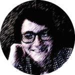
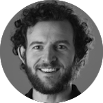
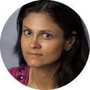

The IDC meets Mondays 6-7:30pm at Market Place Upper East. These sessions will generally feature a guest speaker and dinner will be provided.
Week 1 (Aug 24):
No meeting.
Week 2 (Aug 31):
Meet the ‘What If?’ team
Speakers:
- Mine Cetinkaya-Rundel, Statistical Science
- Anita Layton, Mathematics
- Jenny Tung, Evolutionary Anthropology
- Lynn Smith-Lovin, Sociology
- Michael Peper, Duke Libraries
Week 3 (Sep 7): The Digital Landscape: Using immersive virtual reality to recreate and interpret archeological heritage

Speaker: Regis Kopper
Director of Duke DiVE
Host: Anita Layton
Abstract: Immersive virtual environments have been used in many areas of knowledge including psychology, engineering, training and education. In this talk I will present the DiVE, Duke’s virtual reality laboratory. I will give a brief introduction of Virtual Reality (VR), what it is capable of and what is the state of the art in display technologies. I will then present the Bass Connection project “The Digital Landscape”, which we have been developing for the past two years. The goal of this project is to capture data from archaeological dig sites and create reconstructed 3D models that can be interactively explored in an immersive virtual environment. I will conclude by talking about challenges and opportunities presented when working with truly interdisciplinary teams, as is the case with Bass Connections projects.
Week 4 (Sep 14): Apply it like you do: Being a modern applied statistician from start to finish
Host: Mine Çetinkaya-Rundel

Speaker: Beka Steorts
Assistant Professor of Statistical Science
Abstract: Applied statistics involves the integration of mathematical statistics, computer science, and domain knowledge about an area of application, such as neuroimaging, official statistics, the medical field, human rights violations, and others. My research focuses on answering fundamental questions in social processes and then building probabilistic models to understand such processes. Moreover, this can provide guidance and insight to better inform decision in public policy. This talk is in two parts. First, we define what applied statistics is in today’s world. Second, we discuss two applications, the Syrian civil war and predictive modeling using electronic health care data. For both applications, I will discuss the application, interesting social science questions, and current methods in the literature for approaching both problems.
Week 5 (Sep 21): Starting at a start up: adventures in agriculture
Host: Mine Çetinkaya-Rundel

Speaker: Jesse Windle
Director of Data Science at Hi Fidelity Genetics
Abstract: I used to be a visiting assistant professor at Duke; now, I am the first employee at an ag-based startup. In this talk I will tell you about my transition to the “real world” and how Hi Fidelity Genetics is trying to make sure there is enough food for an increasingly populous and prosperous world.
Field Trip (Sep 26):
Trip to Beaufort, NC.
Week 6 (Sep 28):
No meeting
Week 7 (Oct 5): A brief introduction to Gaussian processes
Host: Mine Çetinkaya-Rundel

Speaker: Colin Rundel
Assistant Professor of the Practice of Statistical Science
Abstract: In this talk I will discuss Gaussian processes as a general regression-like modeling approach. This will include a review of common regression methodologies as well as an introduction to Gaussian process based approaches and how they generalize. We’ll wrap up with an example using Gaussian processes to model air pollution.
Week 8 (Oct 12):
Fall Break - no meeting
Week 9 (Oct 19): Point of Care Optical Technologies for Women’s Health
Host: Anita Layton

Speaker: Nimmi Ramanujam
Professor of Biomedical Engineering
Abstract: Optical technologies have been exploited widely in the analytical chemical analysis of biological samples. While the benefits of optical spectroscopy and microscopy have long been known in the laboratory, over the past quarter century there has been increasing interest in the application of these techniques to intact human tissues. One of the distinct attributes of light is that is provides exquisite chemical specificity by interacting with a number of molecules that are already present in the tissue and thus has the capability to provide insight into functional, morphological and molecular contrast. Our objective is to exploit the wealth of physiological, metabolic, morphological and molecular sources of optical contrast to develop novel strategies that focus on cervical cancer screening and breast cancer diagnostics.
Week 10 (Oct 26):
Host: Anita Layton

Speaker: Xiaobai Sun
Professor of Computer Science
Week 11 (Nov 2):
Host: Anita Layton

Speaker: Sayan Mukherjee
Professor of Statistical Science
Week 12 (Nov 9): Lessons from Undergraduate Research
Host: Mine Çetinkaya-Rundel

Speaker: David Clancy
Undergraduate student at Department of Statistical Science & Mathematics
Abstract: Reflections on research as an undergraduate including effective communication with others, successful planning before and during projects, and finding opportunities for research.
Week 13 (Nov 16): Getting into Data Science Research at Duke: The Data+ Program
Host: Anita Layton

Speaker: Paul Bendich
Associate Director for Undergraduate Research at iiD
Want a first taste of research on a data science team, and get paid 5K for doing so? The Data+ Program meets for ten weeks over the summer. Students join small teams working on data-driven problems, often with a connection to local companies or civic agencies.
Paul Bendich will talk about some of the great projects that happened last summer (including work on political gerrymandering, hurricane description via topology, and solar power work using image analysis and machine-learning), and he will preview some of the possible teams for next summer.
Week 14 (Nov 23):
No meeting
Week 15 (Nov 30):
Host: Mine Çetinkaya-Rundel
Speaker: Lucy Lu
Undergraduate student at Department of Statistical Science